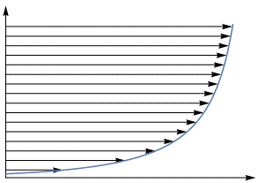

3.8. Reynolds number¶
Big idea: Characterising viscous and inertial effects The Reynolds number gives a rough indication of the relative importance of inertial and viscous effects, and a way to easily make comparisons between experiments that use different fluids (viscosities) or differently sized apparatus. High and low Reynolds number flows are found to have quite different general characteristics, which can be investigated by scaling arguments in which the flow quantities are related to powers of the Reynolds number.
How are curl and div of velocity related to sliding and squashing?
Non-dimensionalisation Consider the conservation of momentum equation we obtained previously, before non-dimensionalisation.
We may introduce non-dimensional variables using a characteristic length scale \(L\), velocity \(U\), time \(T\), pressure \(P\) and body force \(g\):
Making these substitutions gives:
The following dimensionless parameters now appear in the normalized momentum equation:
\(\mathrm{St}=\frac{L}{TU}\)
Strouhal number
\(~\frac{\text{local accelaration}}{\text{convective acceleration}}\)
\(\mathrm{Re}=\frac{UL}{\nu}\)
Reynolds number
\(~\frac{\text{inertia}}{\text{viscous effects}}\)
\(\mathrm{Fr}=\frac{U^2}{gL}\)
Froude number
\(~\frac{\text{inertia}}{\text{body force}}\)
If any of these quantities is large/small then we may construct an approximate solution by neglecting relevant terms in the equation. In the Navier Stokes equations presented in the previous chapter, the body force was neglected and it was assumed that the scales of local acceleration, inertia and pressure are comparable so that the following non-dimensionalisations of time and velocity are sensible:
We obtain the equation given previously. The asterisks can dropped, because from now on we will always work with dimensionless quantities:
The choice of characteristic length and velocity scales is somewhat arbitrary, but should be done to ensure that the physical quantities are \(\mathcal{O}(1)\) or smaller. The characteristic length scale should be chosen as a typical distance over which the fluid velocity changes by an amount of order \(U\).
Defining a characteristic length scale is not always easy, though fortunately practices have been established (at least for classical geometries) through years of study and enhanced understanding about flows. For instance, in the case of developed fluid flow through a pipe or channel the relevant characteristic length scale is the diameter of the enclosure. For unconfined flows, such as the flow of oncoming fluid over a flat plate it is more challenging to define a suitable length scale. We may, in that case, define the Reynolds number based on some fixed downstream reference distance from the leading edge of the plate that is applicable to the region of interest.
Why we introduce the Reynolds number
To simplify comparison between experiments:
Example: Consider a hypothetical experiment in which fluid flows through a long channel between two walls. In this experiment we might take the characteristic velocity and length scales to to be the average velocity (determined by the mass flow rate) and the distance between the two walls (or the maximum distance if they are curved).

Now suppose that we wish to repeat the experiment with the walls moved further apart. The geometry of the problem remains otherwise the same, and so the only thing that changes in the non-dimensionalised problem is the Reynolds number. The effect of moving the walls further apart is identical to the effect of either increasing the velocity or decreasing the viscosity - since each of these changes only results in an increase in the Reynolds number. This allows experimenters to use reduced scale models to investigate fluid phenomena (e.g. aerodynamic performance), by substituting the fluid (e.g. air) for a more viscous fluid (e.g. water). Broadly speaking, we can use a single parameter to compare results between multiple experiments.
To quantify the relationship between viscous and inertial terms:
To see why the Reynolds number is important, notice that in the dimensional form of the equations we have
inertial term: \(\underline{v}.\nabla\underline{v} =\mathcal{O}(U^2/L)\) viscous term: \(\nu\Delta\underline{v} =\mathcal{O}(\nu U/L^2)\) So the ratio of inertial\(/\)viscous terms is \(\mathcal{O}\left(\frac{U^2/L}{\nu U/L^2}\right)=\mathcal{O}(\mathrm{Re})\).
The Reynolds number therefore gives a rough indication of the relative importance of inertial and viscous effects. At low Reynolds numbers (\(\mathrm{Re}\ll 1)\) the effects of viscosity appear to be very important whilst at high Reynolds numbers (\(\mathrm{Re\gg 1}\)) the effects of inertia appear to dominate.
See also: https://ed.ted.com/lessons/human-sperm-vs-the-sperm-whale-aatish-bhatia
Example: Low Reynolds number flow If the Reynolds number is very small (e.g. for very viscous flows) then we can neglect the inertial terms \(\underline{v}.\nabla\underline{v}\) to leave
If we are interested in steady solutions in the absence of a body force, the system reduces to the equation for Stokes flow (creeping flow):
The flow governed by this pair of equations exhibits the fascinating property of reversibility. If the boundary conditions conditions applied to the fluid are reversed, the fluid particles will return back along their previous paths. A striking demonstration of this phenomenon can be found here:
https://fyfluiddynamics.com/2012/02/the-reversibility-of-laminar-mixing-often-comes-as/
This has important implications for the swimming of microcellular organisms, which are unable to propel themselves using flapping or “paddling” motions. The finding is known as the scallop theorem, since the opening and closing swimming mechanism used by scallops would be ineffective at low Reynolds numbers.
Organisms that inhabit a low Reynolds number world employ a variety of exotic swimming techniques to overcome these limitations, such as the use of corkscrewing flagella. Discussion can be found in a delightful, original paper on Life at Low Reynolds Numbers by E.M. Purcell. I also recommend watching a portion (from 25:00) of this lecture by the legendary fluid dynamicist G.I. Taylor, given over half a century ago.
We must be very careful when neglecting terms. For example, consider a cylinder placed into an oncoming highly viscous 2D fluid flow of velocity \(U\), as shown in the image below. If we define \(\mathrm{Re}=\frac{Ua}{\nu}\), where \(a\) is the diameter of the cylinder, then the effect of inertia will apparently be negligible near to the cylinder. However, away from the boundary the characteristic length scale associated with changes in velocity is larger, as the flow becomes more and more uniform. Therefore the effects of inertia are more important in the outer flow regions.
Hele Shaw flow
In fact, if the effects of inertia are neglected away from the surface of the sphere then the mathematical equations are ill-posed and it becomes impossible to satisfy appropriate boundary conditions for the far-field. This is known as Stokes’ paradox. It can be resolved by taking a different approximation away from the boundary, that includes inertial terms; and blending or “matching” the expressions obtained from each of the two approximations. The mathematics required to do this is known as matched asymptotics.
It is based on the idea of starting with the full non-dimensional Navier stokes equations and constructing scaling arguments that relate fluid quantities to powers of the Reynolds number, to allow balancing of different physical effects in the equations. Different scaling laws apply in different regimes of the flow, based on physical assumptions, such as the distance from a boundary. We will not study the techniques of matched asymptotics as it is a very involved subject. Although the history of matched asymptotics is strongly associated with fluid dynamics, it has wide applications to areas including quantum mechanics. The techniques are usually first encountered in graduate level courses, and we will not attempt an investigation here, though a “toy” demonstration is given at the end of this chapter.
High Reynolds number flow In the case of High Reynolds number flow it is the viscous effects that appear to be small. Neglecting the viscous terms \(\nu\Delta \underline{v}\) results in the Euler’s equations of fluid dynamics, which we will examine in the next chapter. Again, however, we need to be extremely careful.
Let us return to the idea of a cylinder placed into an oncoming flow- this time at high speed. Early experimenters and mathematicians did not have the techniques of high speed photography available to them, and there was disagreement about what happens at the fluid boundary. Many believed that fluid particles would “stick” to the boundary and transfer momentum, whilst others believed that the flow would move smoothly past the boundary.
Neither approach fitted well with the equations of motion. On one hand, transfer of momentum within the fluid requires viscosity, and it would be impossible to satisfy the no-slip condition at the boundary if these effects were neglected. On the other hand, it is plain from scaling arguments that for high speed flows of low viscosity fluid (such as air) the effects of viscosity should be much less important than inertia. We will also see later in this course that ignoring the no slip condition results in D’Alembert’s paradox of zero drag, and zero lift - meaning that aeroplanes would never fly!
The difficulty was eventually understood by Prandtl (1904), who reasoned for the existence of a narrow region called a boundary layer, in which the horizontal velocity increases rapidly in the direction away from the plate. In this region, viscous terms are comparable in magnitude to inertial terms, and act to decelerate the flow at the surface by diffusion of momentum. The viscous solution is then matched to the inviscid solution at the edge of the boundary layer to form a composite solution that is valid throughout the entire flow field. Matched asymptotics again!
An illustration of the concept of a boundary layer is provided below. The image comes from this paper about the history of boundary layer theory, which I think is written in a way that is fairly accessible to undergraduate physicists.

{kind=link}
Transition to turbulence A key feature of interest to mathematicians and engineers is the development of models that can account for laminar-turbulent transition. A laminar flow is an orderly flow characterised by fluid layers moving smoothly past one another, whilst a turbulent state is characterised by disordered, chaotic motion occurring a variety of length scales (a “cascade” of scales). Transition between these states can occur spontaneously, as illustrated in the video example below.
In the experiment, fluid under carefully controlled conditions is ran through a pipe. Dye is injected into the flow to visualise how the fluid particles behave. This type of visualisation is called a streakline. You will read about streaklines in the next chapter. In the experiment, the speed of the fluid in the pipe is gradually increased, which is seen to result in transition from a laminar to a turbulent state.
https://www.youtube.com/watch?v=CAM-ubZIdFg
A good understanding of the features of the conditions that lead to turbulence could help with engineers learn to control transition. For an example discussion, see this video [2:30-8:05]. Sometimes the desire may be to facilitate turbulence, for instance as an efficient mechanism of heat transfer or a means of achieving liquid-jet breakup in fuel injection systems. Conversely, in aerodynamic applications turbulent skin-friction drag can be as much as ten times that of laminar flow at the same Reynolds number, and accounts for 50% of the total drag experienced by a subsonic aircraft. This means that any reduction in turbulence offers huge potential for fuel savings as well as reduction of greenhouse gases and other pollutants.
The pipe flow experiment shown in the video is a classic, which was studied by Osborne Reynolds (after whom the number is named). He conducted experiments similar to the one shown, with more rudimentary apparatus, and he also developed the mathematical theory of laminar-turbulent transition in pipe flows.
The mathematical theory begins by first solving the equations of motion for steady flow in a pipe \(U(r)\), where \(r\) is the radial coordinate. The flow velocity is found to follow a parabolic flow profile. We will illustrate the mathematics later in this course, when we look at elementary viscous flows.
It is then assumed that the steady flow is subjected to some small amplitude disturbances (perturbations) in the manner \begin{equation}\underline{v}=(U(y),0,0)+\epsilon\hat{\underline{v}},\end{equation} where \(\epsilon\) is a small parameter and \(\hat{\underline{v}}\) are motions of the sort you considered when you solved the wave equation. These additional terms represent tiny background fluid motions such as vibrations, or disturbances created at the point where dye is injected into the flow or where the fluid enters the pipe.
We solve the equations of motion for the combined motion and determine what happens to the amplitude of the waves. This is called a perturbation theory. We want to establish if the perturbations are amplified or damped, with assumption that amplified perturbations will eventually become large enough to trigger a nonlinear cascade (instability).
The results of the linear theory for pipe flow suggest that the flow should remain stable up to very large Reynolds numbers, meaning for flow speeds that are very fast. However, very carefully controlled experiments have indicated that a turbulent state in pipe flows occurs at much lower Reynolds numbers than what the linear theory predicts, suggesting that a nonlinear theory is required.